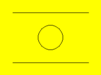
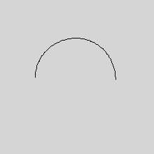
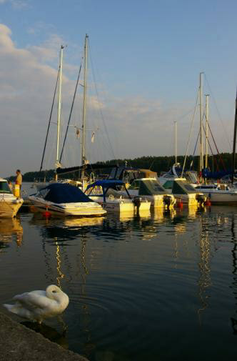
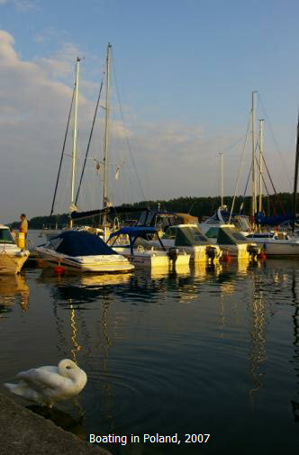

Graphics Overview
Graphics Essentials
Turtle Graphics
Getting Images from Files
Graphics Commands
Run BASIC provides many useful capabilities for drawing graphics and including them in a web application.
To create a graphical object in a Run BASIC program we use the GRAPHIC statement, like so:
graphic #myDrawing, 200, 150
This statement creates a graphical object 200 wide by 150 high and assigns it to the object variable (or handle) #myDrawing. Once we have this object we can call methods on it to draw in different ways. Here is a small example that draws a background color, then some lines and then a circle:
graphic #myDrawing, 200, 150
#myDrawing fill("yellow")
#myDrawing line(25, 25, 175, 25)
#myDrawing line(25, 125, 175, 125)
#myDrawing place(100, 75)
#myDrawing circle(25)
render #myDrawing
Here's what the resulting graphic looks like in your web application:

Let's lay out in detail exactly what each line of code does:
graphic #myDrawing, 200, 150
As explained earlier, this GRAPHIC statement creates a graphical object assigned to #myDrawing and which is 200 wide and 150 high.
#myDrawing fill("yellow")
This invokes the FILL method with the color "yellow" which paints the whole of the graphical object yellow. There are other colors including red, blue, green, white, black and more.
#myDrawing line(25, 25, 175, 25)
This invokes the LINE method and draws the topmost horizonal line in the drawing from 25, 25 to 175, 25. The position of 0, 0 is the upper left corner so that's a line that is 25 to the right and 25 down from the upper left corner, and the other end of the line is 175 to the right and 25 down from the upper left corner.
#myDrawing line(25, 125, 175, 125)
This invokes the LINE method again, this time to draw the bottommost line in the drawing.
#myDrawing place(100, 75)
This invokes the PLACE method. The graphical object has a "pen" and this method places the pen at the position 100, 75 which is the center of the drawing. We do this to set up the next statement which draws a circle.
#myDrawing circle(25)
This invokes the CIRCLE method, which draws a circle at the current position of the pen and having a radius of 25.
render #myDrawing
Finally, the RENDER statement causes the graphical object to appear in the web application. Without this the drawing will not appear.
Run BASIC supports an idea called turtle graphics. This is an idea made popular by an language called Logo which was invented by Seymour Papert in Boston, Massachusetts in the 1960's. A "turtle" is also known as a pen because the computer controlled turtle robots that Seymour Papert used would move over large sheets of paper and draw with a pen. Turtle graphics drawings are created by moving and turning, moving some more and turning again, etc.
Here is an example of a turtle drawing of semicircle:
graphic #myDrawing, 220, 220
#myDrawing fill("verylightgray")
#myDrawing place(50, 110)
#myDrawing north()
for x = 1 to 60
#myDrawing turn(3)
#myDrawing go(3)
next x
render #myDrawing

That verylightgray isn't light enough for my taste. You can specify the RBG (red, green, blue) values for a color instead, like so:
graphic #myDrawing, 220, 220
#myDrawing fill(240, 240, 240)
#myDrawing place(50, 110)
#myDrawing north()
for x = 1 to 60
#myDrawing turn(3)
#myDrawing go(3)
next x
render #myDrawing
That's better!
You don't need to do your drawing all in black. Let's brighten things up a bit by adding a call to the COLOR method;
graphic #myDrawing, 220, 220
#myDrawing fill(240, 240, 240)
#myDrawing place(50, 110)
#myDrawing north()
for x = 1 to 60
#myDrawing color(word$("red blue green", (x+19)/20))
#myDrawing turn(3)
#myDrawing go(3)
next x
render #myDrawing
Let's add some text to our semicircle.
graphic #myDrawing, 220, 220
#myDrawing fill(240, 240, 240)
#myDrawing place(0, 14)
#myDrawing "\Semicircle"
#myDrawing place(50, 110)
#myDrawing north()
for x = 1 to 60
#myDrawing color(word$("red blue green", (x+19)/20))
#myDrawing turn(3)
#myDrawing go(3)
next x
render #myDrawing

These two lines of code position the pen and draw the text:
#myDrawing place(0, 14)
#myDrawing "\Semicircle"
The \ tells the graphic object to display the string that comes after it. Any additional \ characters will cause more lines to be displayed. Try modifying the code like so:
#myDrawing "\Semicircle\Multicolored"
If you need to display backslashes and are willing to give up multiline text output then start your line like so:
#myDrawing "|Semicircle \ backslash included"
You don't have to start with a blank graphic object. You can load images from disk files if you need to. Here's two liner:
loadgraphic #picture,
"polandboating.jpg"
render #picture
Here's the result:

Now we can also draw on the graphic object. Here is a quick example:
loadgraphic #picture,
"polandboating.jpg"
howTall = #picture height()
#picture color("white")
title$ = "Boating in Poland, 2007"
xPosition = (#picture width() - #picture stringwidth(title$)) / 2
#picture place(xPosition, howTall - 14)
#picture "\";title$
render #picture
And here's the result!

See how we use the WIDTH and STRINGWIDTH methods to calculate the correct position to display the title?
xPosition = (#picture width()-#picture stringwidth(title$))/2
We also use the HEIGHT method so that the title can be displayed close to the bottom, and the COLOR method to display the title as white instead of black.
The complete list of methods which the graphic objects understand are as follows:
#handle BOX(x, y) - Draw a box from the current position to x,
y.
#handle CIRCLE(r) - Draw a circle of radius r at the current position.
#handle CLS(["color"] | [r, g, b]) - Clear the graphics area to white, or to
named color, or to an RBG color.
#handle COLOR("color" | [r, g, b]) - Set the drawing color to a named color, or
to an RGB color.
#handle DISCARD() - Discard all the drawing operations in the currently open
segment.
#handle DOWN() - Set the drawing pen to down (this is the default).
#handle DRAWIMAGE("name", x, y) - Draw the image named "name" at x, y.
#handle FILL("color" | [r, g, b]) - Like CLS() but it doesn't actually forget
previously drawn graphics
#handle FLUSH(["name"]) - Finish the current drawing segment (and optionally
name it "name") and make another segment.
#handle FONT("fontname", pointSize [,"bold"][, "italic"]) - Specify a font by
name and size to use for drawing text. Italic and bold are optional.
#handle GO(d) - Make the turtle go distance d.
#handle DEBUG$() - Return the string "Graphic".
#handle HEIGHT() - Return the height in pixels of the graphic object.
#handle HOME() - Place the pen in the center of the graphic area.
#handle ISNULL() - Return 0 which stands for false. The graphic object is
not the null object.
#handle LINE(originX, originY, destX, destY) - Draw a line from originX, originY
to destX, destY.
#handle NORTH() - Tell the turtle to point to the top of the graphic object.
#handle PLACE(x, y) - Set the position to be x, y.
#handle REDRAW() - Redraw all the existing drawing segments.
#handle SET(x, y) - Draw a point of the currently set size at x, y.
#handle SIZE(s) - Set the size of the drawing pen to s pixels.
#handle STRINGWIDTH(str$) - Return the width in pixels of str$ using the current
font.
#handle TURN(a) - Turn the turtle a degrees to the right. a can be
negative to turn to the left.
#handle UP() - Set the drawing pen to up (don't draw).
#handle WIDTH() - Return the width in pixels of the graphic object.
#handle X() - Return the current position x.
#handle Y() - Return the current position y.